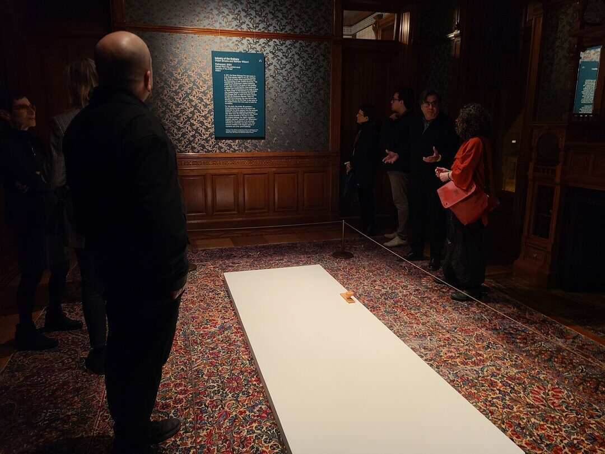
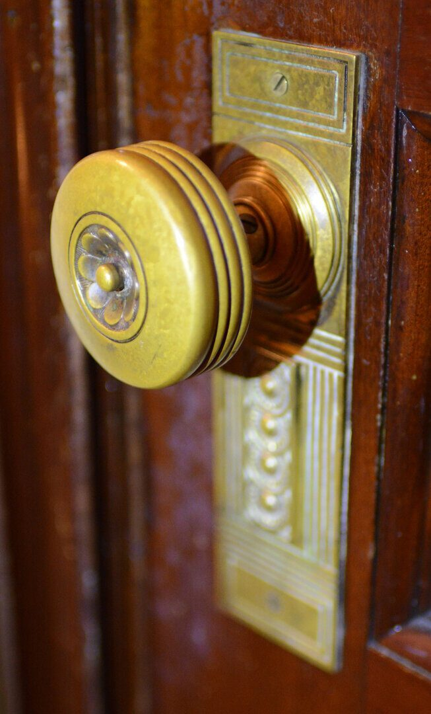
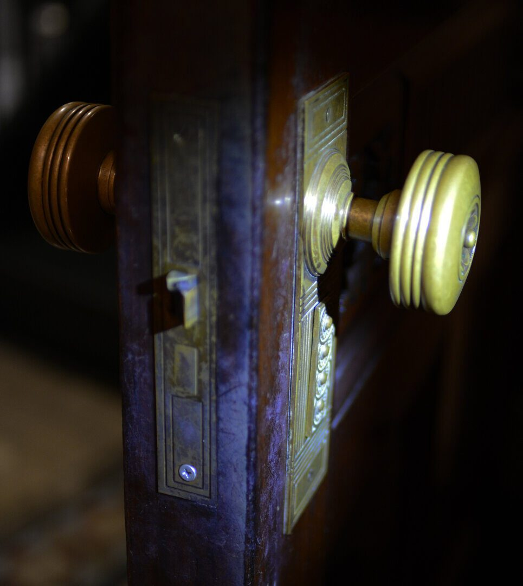
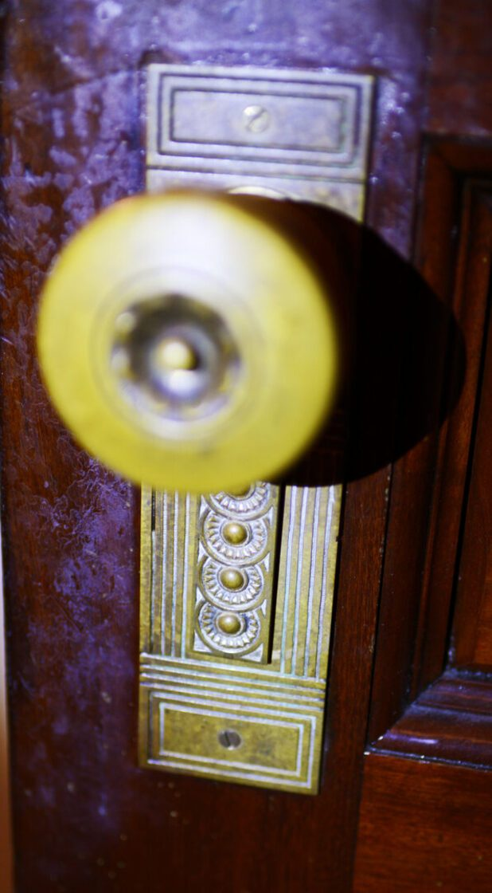

Objects / 2024
Palimpsest
Industry of the Ordinary, Driehaus Museum
A digital-to-ceramic translation of Victorian door hardware for Industry of the Ordinary's Palimpsest project at the Richard H. Driehaus Museum.
For Palimpsest, Industry of the Ordinary looked closely at the decorative hardware embedded in the Driehaus Museum's Gilded Age rooms.
ChiLab documented original brass door hardware in place, translated that scan data into precise digital models, and produced prototypes that could guide ceramic reproduction.
The resulting terracotta objects returned those forms to the rooms as artifacts of copying, memory, and material translation.
Details
- Year
2024 - Location
Chicago, IL - Category
Objects - Materials
3D scan data, 3D printed prototypes, terracotta ceramic, original brass hardware
Credits
- Artists: Industry of the Ordinary
- Venue: Richard H. Driehaus Museum
- Digital fabrication: ChiLab Studio
Download
Index




